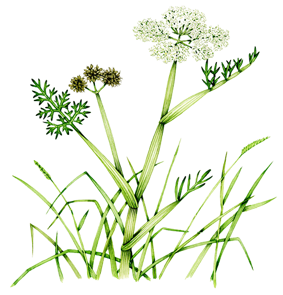

Shepard's Purse

In Japan, there is a dish traditionally
eaten on January 7th, at the beginning
of the year
It's called
or Seven-Herb Rice Porridge
Here are the herbs traditionally
used in the porridge
|  |
Seri Water Dropwort |
|
Nazuna Shepard's Purse |
|
|
Gogyō Cudweed |
|
Hakobera Chickweed |
|
Hotoke no Za Nipplewort |
|
Suzuna Turnip |
|
Suzushiro Daikon Radish |
When people eat Nanakusa Gayu,
what they wish for is
in the coming year
May you also have good health
throughout this year!